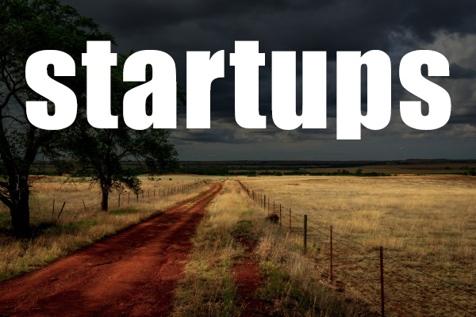
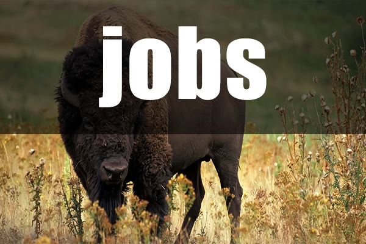

<link rel="import" href="../bower_components/polymer/polymer.html">


  <!-- Google Elements IMPORTS -->
  <link href="../../bower_components/iron-icons/iron-icons.html" rel="import">

  <link href="../../bower_components/polymer/polymer.html" rel="import">
  <link href="../../bower_components/paper-drawer-panel/paper-drawer-panel.html" rel="import">
  <!-- <link href="../../bower_components\paper-header-panel\paper-header-panel.html" rel="import"> -->
  <link href="../../bower_components/paper-toolbar/paper-toolbar.html" rel="import">
  <link href="../../bower_components/paper-icon-button/paper-icon-button.html" rel="import">
  <link href="../../bower_components/paper-material/paper-material.html" rel="import">
  <link href="../../bower_components/paper-menu/paper-menu.html" rel="import"> 
  <link href="../../bower_components/paper-item/paper-item.html" rel="import">
  <link href="../../bower_components/paper-input/paper-input.html" rel="import">
  <link href="../../bower_components/iron-icons/iron-icons.html" rel="import">
  <link href="../../bower_components/paper-fab/paper-fab.html" rel="import">
  <link href="../../bower_components/paper-button/paper-button.html" rel="import">
  <!-- Google ElementsIMPORTS -->

  <!-- Polymer Link -->
  <link rel="import" href="../../bower_components/polymer/polymer.html">
  <!-- Polymer Link -->


<dom-module id="rdd-site">
  <template class=" js flexbox flexboxlegacy canvas canvastext webgl touch geolocation postmessage websqldatabase indexeddb hashchange history draganddrop websockets rgba hsla multiplebgs backgroundsize borderimage borderradius boxshadow textshadow opacity cssanimations csscolumns cssgradients cssreflections csstransforms csstransforms3d csstransitions fontface generatedcontent video audio localstorage sessionstorage webworkers applicationcache svg inlinesvg smil svgclippaths" lang="en" data-useragent="Mozilla/5.0 (compatible; MSIE 10.0; Windows NT 6.2; Trident/6.0)" is="dom-bind" id="app">
  
  <!-- Foundation CSS -->
    
    <link rel="stylesheet" href="../webfiles/portfolio-theme.css">
    <link href="../webfiles/foundation1.css" rel="stylesheet" type="text/css">
    <link rel="stylesheet" type="text/css" href="../css/foundation.min.css">
  <!-- Foundation CSS -->


  <style type="text/css">
/*        div {
          outline: 1px solid black;
        }*/

        paper-toolbar {
          background: #ce2700;
        }

        .lets-pad li {
          padding: 10px;
        }

        /* unvisited link */
        .different:link {
            color: #FFFFFF;
        }

        /* visited link */
        .different:visited {
            color: #FFFFFF;
        }

        /* mouse over link */
        .different:hover {
            color: #FFFFFF;
        }

        /* selected link */
        .different:active {
            color: #FFFFFF;
        }
  </style>


    <!-- local DOM for your element -->
      <paper-header-panel main style="position:fixed;z-index:999;width:100vw">
        <paper-toolbar style="background:#ce2700">
          <div class="flex"><a class="different" href="#"><b>Red Dirt Devs</b></a></div>
          <paper-icon-button id="paperToggle" icon="menu" on-tap="{{menuAction}}" paper-drawer-toggle></paper-icon-button>
        </paper-toolbar>
      </paper-header-panel>

    <div class="hero">
        <div class="row">
            <div class="large-12 columns intro-text" style="height:960px">
                <br><br><br><br><br>
                <p>Bring your ideas to life.</p>
            </div>
        </div>
    </div>

<!-- About -->

    <div class="row about">
      <a name="about"></a>
        <div class="medium-6 large-8 columns">
            <h4>About</h4>
            <p>In OKC, there are development groups and entrepreneurial groups, but never has there been a group to mix the two. Our OKCoders group is meant to do just that and to work with OU's Center for the Creation of Economic Wealth (CCEW) as well as the Oklahoma City Chamber of Commerce. In fact, this group has been founded by the CCEW's OKCoders class alumni to try and keep the original OKCoder's vision alive.
            <br><br>
            We have two primary goals. We plan to help train and build resume material for our members through community outreach projects for nonprofits in our area. Also, we will continue the goals of the original OKCoders group by blending the entrepreneurial groups with the development groups in the local community, allowing ideas to be created and built just as fast as we can come up with them.</p>
        </div>
        <div class="medium-6 large-4 columns">
            
        </div>
    </div>


<!-- /About -->
<!-- Work -->

    <div class="row work">
        <hr>
        <div class="large-12 columns">
            <ul class="clearing-thumbs small-block-grid-1 medium-block-grid-2 large-block-grid-4 lets-pad" data-clearing="">
                <li>
                    <a href="../images/startups.jpg">
                    </a>
                </li>
                <li>
                    <a href="../images/jobs.jpg">
                    </a>
                </li>
                <li>
                    <a href="../images/events.jpg">
                    </a>
                </li>
                <li>
                    <a href="../images/news.jpg">
                    </a>
                </li>
            </ul>
        </div>
    </div>

<!-- /Work -->
<!-- Contact -->

    <div class="row contact">
        <hr>
        <div class="large-12 columns">
            <h4>Contact Us</h4>
            <div class="large-4 columns">
                <strong>Email</strong>: contact@reddirtdevs.com
            </div>
            <div class="large-4 columns">
                <strong>Twitter</strong>: <a href="https://twitter.com/RedDirtDevs">@RedDirtDevs</a>
            </div>

        </div>
    </div>

<!-- /Contact -->
<!-- Footer -->

    <footer class="row">
        <div class="large-12 columns">
            <div class="row">
                <div class=" large-offset-10 large-2 columns">
                    <br>
                    <p>© Red Dirt Devs.</p>
                </div>
            </div>
        </div>
    </footer>

<!-- /Footer -->


  </template>
</dom-module>


    <script>
      Polymer({
        is: 'rdd-site'
      });
    </script>

    <script src="../webfiles/modernizr.js"></script>

    <!-- build:js scripts/app.js -->
    <script src="../scripts/app.js"></script>
    <!-- endbuild-->

    <script>
        document.write('<script src=' +
            ('__proto__' in {} ? 'js/vendor/zepto' : 'js/vendor/jquery') +
            '.js><\/script>')
    </script>
    <script src="../webfiles/zepto.js"></script>
    <script src="../webfiles/jquery.js"></script>
    <script src="../webfiles/foundation.min.js"></script>
    <script src="../webfiles/foundation.js"></script>
    <script src="../webfiles/foundation.clearing.js"></script>
    <script>
        $(document).foundation();
    </script>
    <script src="../webfiles/jquery(1).js"></script>
    <script src="../webfiles/foundation(1).js"></script>
    <script>
        $(document).foundation();

        var doc = document.documentElement;
        doc.setAttribute('data-useragent', navigator.userAgent);
    </script>